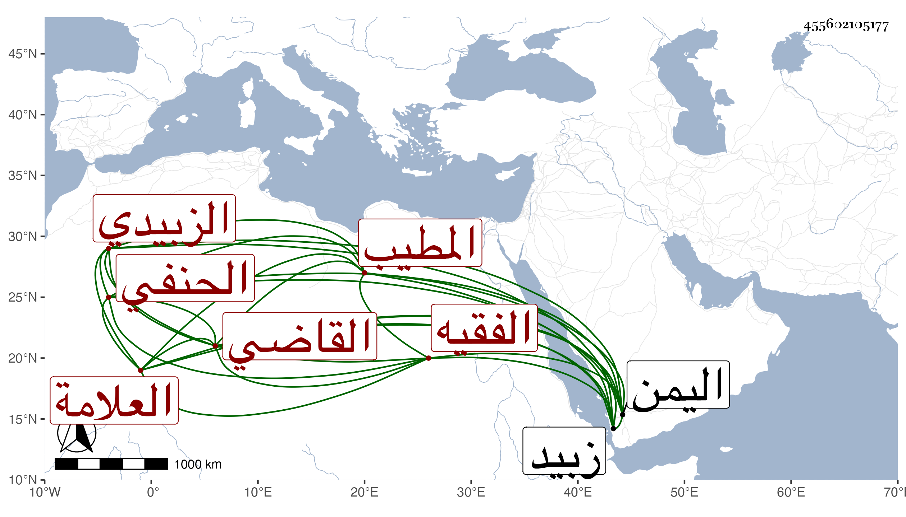

0902Sakhawi.DawLamic.ITO20230111-ara1.EIS1600.455602105177
Biography ID: 455602105177
1229
الصديق بن علي بن محمد بن علي القاضي الفقيه العلامة رضي الدين المطيب الزبيدي الحنفي والد عبد الرحمن ويعرف بابن المطيب . مات في سحر يوم الثلاثاء سادس عشري رمضان سنة ثلاث وتسعين ، وكان بارعا في العربية والمعاني والبيان والمنطق والأصلين والتفسير والفقه . ولي قضاء الحنفية بزبيد بل كمان ولي بها قضاء الأقضية بحيث كان الشافعية فيها من نوابه في أيام علي بن طاهر ودرس وأقرأ سيما العربية ، وممن أخذ عنه حمزة الناشري وبالجملة فكان رئيس الحنفية ورأسهم وإليه مرجعهم ، وله وقع في القلوب مع الديانة والصيانة غير أنه يتغالى في تعظيم أهل مذهبه والقيام بهم رحمه الله . إلي ببعض هذا من اليمن الجمال موسى الدوالي نفع الله به .
